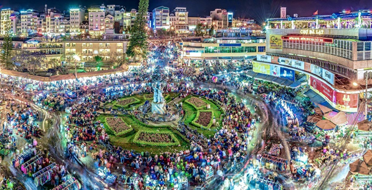
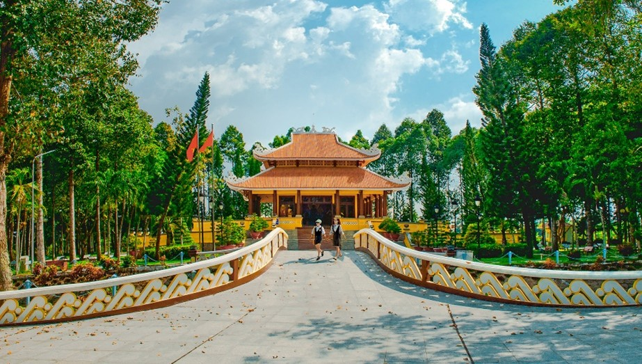
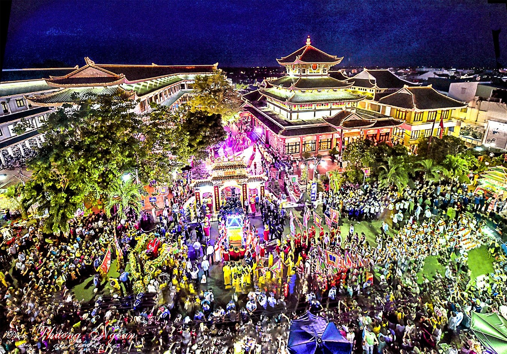
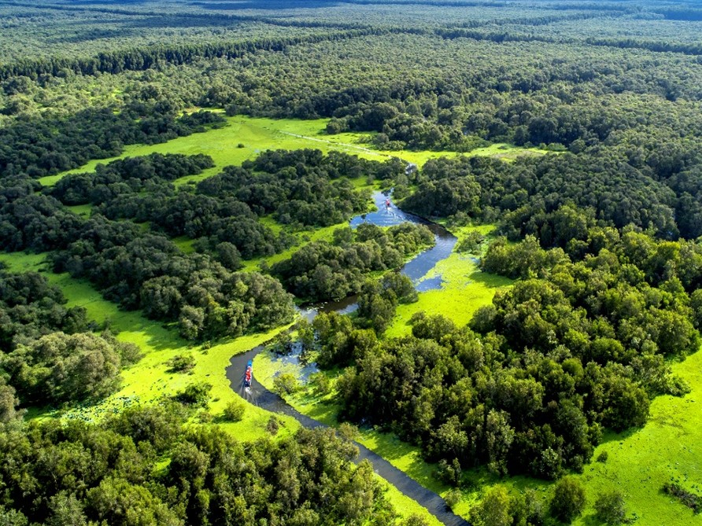
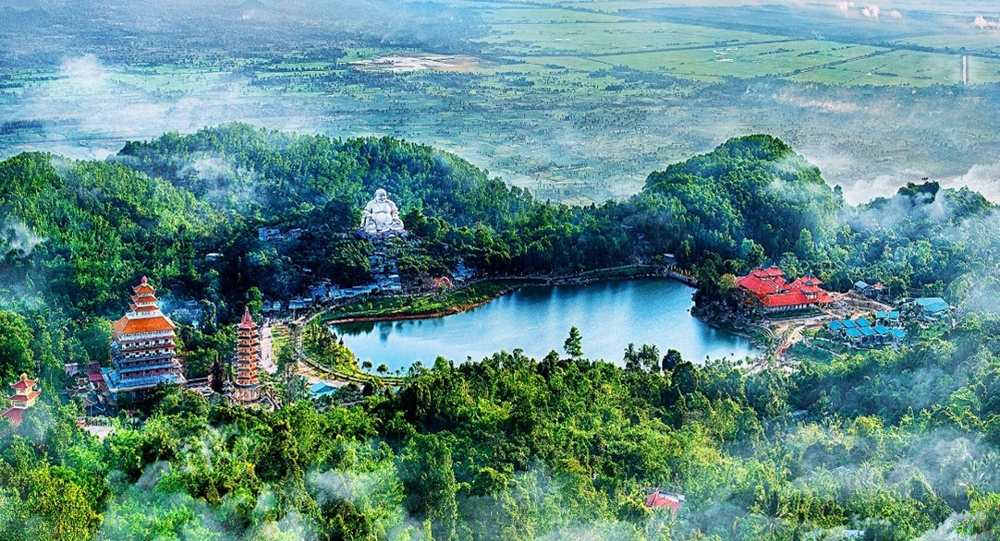
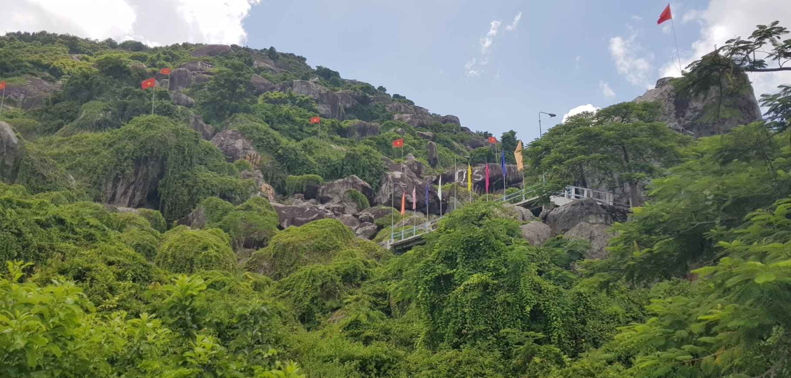

ĐÀ LẠT - THIÊN ĐƯỜNG DU LỊCH 🌄
🌺 Đà Lạt, tỉnh Lâm Đồng là một trong những thành phố du lịch nổi tiếng của Việt Nam. Sở hữu vẻ đẹp nên thơ, trữ tình với những rừng thông bạt ngàn, những cánh đồng hoa cẩm tú cầu xinh xắn, những hàng cây mai anh đào rực rỡ, cùng với sự hiện diện của hàng trăm ngôi chùa, nhà thờ, tu viện mang kiến trúc độc đáo….đã tạo nên một Đà Lạt với vẻ đẹp rất riêng mà bất kỳ ai khi đã đến thì không thể nào quên.
🗓️ Thời điểm ghé thăm Đà Lạt
Được mệnh danh là “Thành phố ngàn hoa” Đà Lạt có đủ 4 mùa Xuân, Hạ, Thu, Đông trong một ngày, khi đến đây vào các mùa hoa bạn sẽ như lạc vào chốn bồng lai tiên cảnh vậy. Từ tháng 2 đến tháng 4 là thời điểm hoa anh đào, hoa ban trắng, hoa Mimosa, hoa phượng tím… nở rộ. Lúc này khí hậu mát mẻ nên rất thích hợp để bạn đến với Đà Lạt vui chơi và khám phá. Nếu bạn yêu sự lãng mạn và bình yên nơi xứ sở ngàn hoa thì từ tháng 5 đến tháng 8 là một khoảng thời gian “rất Đà Lạt” với những cơn mưa phùn mang lại cảm giác tĩnh lặng, yên bình. Mùa này những bông hoa cẩm tú cầu đua nhau khoe sắc, hay những cánh đồng hoa oải hương nở rộ tạo nên một khung cảnh vô cùng nên thơ và lãng mạn. Khi ghé thăm Đà Lạt vào tháng 9 đến tháng 1 bạn sẽ chiêm ngưỡng những sắc hoa dã quỳ rực rỡ, hoa tam giác mạch, hay những đồi cỏ hồng đẹp như cổ tích... Đây cũng là mùa những chiếc lá phong dần đổi màu, từ màu xanh bắt đầu chuyển sang vàng úa, dần dần sang màu đỏ ối cả một góc trời, nổi bật giữa cánh rừng xanh mát tuyệt đẹp, đáng để bạn ghé thăm và thưởng ngoạn.
🚗 Phương tiện đi lại
Đà Lạt cách TP.HCM khoảng 300km. Nếu bạn đến từ các tỉnh miền Bắc và Bắc Trung Bộ bạn nên chọn phương tiện là máy bay để tới thẳng Đà Lạt. Nếu bạn ở khu vực phía Nam và Nam Trung Bộ bạn có thêm sự lựa chọn là đi ôtô khách để đến với Đà Lạt. Tại Đà Lạt, có nhiều dịch vụ di chuyển cho bạn lựa chọn như: thuê xe máy, ôtô, taxi hoặc sử dụng các ứng dụng gọi xe công nghệ để di chuyển giữa các điểm tham quan.
🏨 Địa điểm lưu trú
Đà Lạt là thành phố du lịch nên có rất nhiều địa điểm lưu trú cho bạn lựa chọn. Bạn có thể lựa chọn lưu trú tại khách sạn và resort cao cấp như: Khách sạn Dalat Palace, Terracotta Hotel & Resort Đà Lạt, Đà Lạt Wonder Resort, Cereja Hotel & Resort Đà Lạt, Ana Mandara Villas Đà Lạt Resort & Spa, Colline Hotel… Hoặc cũng có thể lựa chọn một số homestay như: Biệt Thự Oriana Đà Lạt, The Shelter homestay, The Kupid homestay, Gỗ thông homestay, Cú trên cây homestay, Là Nhà homestay … Bình dân hơn, bạn có thể lựa chọn một số khách sạn, nhà nghỉ như: Len’s Hotel, khách sạn Tulip Hotel Đà Lạt, khách sạn An Phú Đà Lạt, Intersrella hotel, Rover park hotel, Vietsovpetro…
📍 Những điểm tham quan nổi tiếng tại Đà Lạt
- 🧘 Thiền viện Trúc Lâm Đà Lạt nằm trên núi Phụng Hoàng nhìn ra hồ Tuyền Lâm xanh ngắt tuyệt đẹp. Đây là điểm tham quan và chiêm bái quen thuộc của du khách và các phật tử khi tới Đà Lạt. Thiền viện được bao quanh bởi nhiều cây cảnh xanh tươi, với những vườn hoa quanh năm khoe sắc, bên dưới có hồ Tuyền Lâm trong xanh, thơ mộng. Nét thanh tịnh nơi này khiến bạn cảm thấy mọi phiền muộn lo toan đều tan biến, tâm hồn trở nên yên bình.
- 🏛️ Dinh Bảo Đại Dinh Bảo Đại Đà Lạt gồm Dinh I, Dinh II và Dinh III. Trong đó, Dinh III là nơi thu hút du khách đến tham quan nhiều nhất. Bởi vì nơi đây vừa là chỗ sinh hoạt và làm việc của Vua Bảo Đại vừa là Dinh thự được bảo tồn gần như nguyên vẹn.
- 🌻 Quảng trường Lâm Viên tọa lạc giữa “trái tim” của thành phố hoa, hướng ra hồ Xuân Hương với tổng diện tích lên đến 72.000m². Không chỉ nổi bật với không gian rộng, thoáng mà Quảng trường Lâm Viên còn ấn tượng với công trình nghệ thuật hình nụ hoa Atiso và hoa dã quỳ khổng lồ được thiết kế bằng kính màu lạ mắt. Quảng trường Lâm Viên còn là địa điểm diễn ra lễ hội Festival Hoa Đà Lạt và một số lễ hội khác như: Lễ hội Đâm Trâu, lễ hội Trà…
- 💖 Thung lũng Tình yêu là một trong những thắng cảnh thơ mộng nhất tại Đà Lạt, cách trung tâm thành phố khoảng 5km về phía Bắc thuận lợi cho việc bạn di chuyển. Thung lũng Tình Yêu đẹp và cuốn hút bởi những đồi thông quanh năm xanh biếc cùng những vườn hoa rực rỡ bên hồ nước Đà Thiện, uốn quanh, vắt ngang qua thung lũng. Tất cả như hòa quyện lại với nhau và tạo nên một bức tranh sơn thủy tuyệt đẹp. Đến đây bạn không chỉ được chiêm ngưỡng những vườn hoa rực rỡ như cẩm tú cầu, hoa hồng, vườn dâu tây… mà bạn còn được tham gia những trò chơi thú vị như: đi bộ trên không, đạp vịt, đi cano quanh Hồ Đa Thiện, đi tàu lửa…
- 🛤️ Đường hầm đất sét Đà Lạt hay còn được gọi là đường hầm điêu khắc Đà Lạt. Đây là đường hầm dài nhất thế giới được làm bằng đất sét. Đến đây bạn sẽ được chiêm ngưỡng những hình ảnh điêu khắc trên đất sét bazan do các nghệ nhân tạo nên vô cùng sống động về lịch sử thành phố Đà Lạt từ thủa ban sơ cho tới một Đà Lạt năng động và hiện đại như bây giờ. Các tác phẩm tiêu biểu như là: ga xe lửa, dinh Bảo Đại, Viện Pasteur, Đại học Đà Lạt, khách sạn Palace, nhà thờ Con Gà, chùa Linh Sơn, hồ Xuân Hương, ngôi nhà đất đỏ có mái đắp nổi bản đồ Việt Nam… chắc chắn bạn sẽ được mãn nhãn với những tác phẩm nghệ thuật tinh tế nơi đây.
- ⛪Nhà Thờ Con Gà hay còn được mọi người biết đến với một tên gọi khác là nhà thờ Chính Tòa Đà Lạt. Đây là một trong những công trình kiến trúc tôn giáo mang phong cách kiến trúc đặc trưng, tiêu biểu và cổ xưa được xây dựng từ thời Pháp nhưng đến nay vẫn giữ nguyên được nét hiện trạng ban đầu.
- 🌊Thác Cam Ly: Đây là ngọn thác đi vào rất nhiều thơ văn và bài hát. Thác cao khoảng 10m là một trong những biểu tượng không thể thiếu của thành phố sương mù giống như Hồ Xuân Hương hay Hồ Than Thở…
- 🌊Thác Datanla với dòng nước trong veo chảy qua 7 tầng núi đá rồi dội xuống những phiến đá lớn, tung bọt trắng xóa. Đến đây, bạn còn có cơ hội tham gia các trò chơi mạo hiểm “độc” như trèo thác, vượt thác… Thác Datanla có những tảng đá nhẵn bóng thật đẹp, tương truyền xưa kia các tiên nữ trên thượng giới thường ghé lại nô đùa tắm suối nên khu vực này còn được gọi là Suối Tiên.
- 🏔️Núi Langbiang nằm cách trung tâm thành phố khoảng 12km. Langbiang nổi bật với hai ngọn núi cao sừng sững là Núi Ông và Núi Bà. Nơi đây là ngôi nhà chung của nhiều loại thảo dược, thảo mộc, và chim quý. Bạn có thể chinh phục đỉnh Langbiang bằng xe Jeep. Từ trên đỉnh Langbiangbạn sẽ được chiêm ngưỡng quang cảnh thành phố sương mù từ trên cao. Nếu bạn là người ưa thích khám phá mạo hiểm, hãy tham gia các trò chơi thú vị như: dù lượn, đu dây… sẽ cho bạn cảm giác cực kỳ thú vị và không bao giờ quên.
- 🌺Làng hoa: Đà Lạt vốn được biết đến là thành phố ngàn hoa với các loại hoa từ hoa rừng nhiệt đới cho đến các loài hoa phương Đông, phương Tây. Nếu có dịp ghé thăm thành phố ngàn hoa này thì nhất định bạn không được bỏ qua 3 làng hoa Đà Lạt đẹp có tiếng như Làng hoa Thái Phiên, làng hoa Vạn Thành, làng hoa Hà Đông.
- 🛍️Chợ đêm Đà Lạt: Từ 18h trở đi, con đường đến Chợ Đêm tấp nập người qua lại. Ở đây có bán đủ các loại đồ ăn vặt giới trẻ yêu thích như bánh tráng nướng, khoai nướng, bắp nướng, sữa đậu nành và kem cuộn… Khu mua sắm quần áo và đồ lưu niệm được bày bán rất đa dạng, từ giày dép, mũ nón, đặc sản Đà Lạt, mặt hàng nhiều nhất vẫn là đồ len. Nơi đây thu hút nhiều du khách ghé thăm nhất tại Đà Lạt về đêm.
Bên cạnh đó, vườn hoa thành phố, vườn cẩm tú cầu ở Trại Mát, vườn oải hương hồ Tuyền Lâm, làng Cù Lần, Vườn Thú ZooDoo Đà Lạt, Đồi Robin Đà Lạt, Hồ Tuyền Lâm Đà Lạt, Vùng Đất Cổ Tích Fairytale Land Đà Lạt, Nhà Thờ Domaine De Marie Đà Lạt, Cổng Trời Bali Green Hills Đà Lạt, Chùa Ve Chai...hay các quán cafe đa phong cách cũng là điểm check-in không thể bỏ qua khi đến với Đà Lạt. Ngoài ra, bạn có thể trải nghiệm hoạt động văn hóa cồng chiêng Tây Nguyên hay Săn mây Cầu Đất cũng là một trải nghiệm thú vị, đáng để trải nghiệm.

An Giang - Vùng đất "Sơn kì thủy tú"🌊
🌾 An Giang thuộc khu vực Tây Nam Bộ, nơi đầu nguồn của dòng Mekong chia làm hai nhánh sông Tiền, sông Hậu chảy vào Việt Nam, hình thành nên vùng Đồng bằng châu thổ sông Cửu Long được thiên nhiên ưu đãi nhiều sản vật phong phú cả trên non và dưới nước.Vị trí cách các trung tâm đô thị lớn như TP.HCM 4 giờ và TP Cần Thơ 1,5 giờ đi xe, TP Long Xuyên chiếm vị trí trung tâm, liên kết vùng Đồng Tháp Mười, Kiên Giang và đường biên giới hơn 100km với Vương quốc Campuchia, thuận lợi kết nối giao thương, thuận tiện du lịch, dễ dàng di chuyển. An Giang là tỉnh duy nhất trong khu vực có núi, có rừng giữa đồng bằng, hình thành nhiều danh lam thắng cảnh gắn với nét văn hóa tâm linh thu hút du khách gần xa về tham quan, chiêm bái. Nơi đây đồng thời hội tụ tinh hoa văn hóa của bốn dân tộc: Kinh, Hoa, Chăm, Khmer, gắn liền với công trình kiến trúc, di sản đồ sộ, lối sống đặc trưng hài hòa với bản sắc dân tộc, làm nên tính đa dạng và phong phú, tạo nên sức hấp dẫn đối với du khách.
🗓️ Thời điểm ghé thăm An Giang
🚗 Phương tiện đi lại
🏨 Địa điểm lưu trú
🎒 Những điểm tham quan nổi bật tại An Giang
- 🏛️Thành phố Long Xuyên, cửa ngõ vào An Giang và là trung tâm kinh tế nhiều tiềm năng của khu vực, không ngừng chuyển mình thay đổi từng ngày. Đến với thành phố này, du khách có thể trải nghiệm đi chợ nổi Long Xuyên, thưởng thức các món ăn, mua trái cây đặc trưng về làm quà.
Từ chợ nổi, bạn hãy đi đò dọc hoặc phà qua Khu lưu niệm Chủ tịch Tôn Đức Thắng (xã Mỹ Hòa Hưng).
 Ban đêm, du khách có thể ngồi bên bờ sông Hậu ngắm thành phố về đêm, thưởng thức ẩm thực. Nổi tiếng có món cơm tấm Long Xuyên, bánh tằm se, bánh cuốn và phở bán cả ngày lẫn đêm. Vào trung tâm thành phố, đi vài bước bạn có thể ăn ngay món cơm tấm mà quán nào cũng ngon đối với khách xa. Thật hoàn hảo nếu có bạn đường “thổ địa” dẫn đi ăn cơm tấm Cây Điệp, cơm tấm Phượng, cơm tấm “Không tên” (gần trường đại học - một cách hỏi đường mà khi đến thành phố này bạn hỏi bất cứ ai họ cũng sẽ biết, tin chắc là vậy).
- 🚤 Rời thành phố Long Xuyên theo quốc lộ 91 khoảng 60km về thành phố Châu Đốc, bạn có thể đi bằng xe buýt, xe khách, xe máy và taxi. Có thể nói Châu Đốc là trung tâm của vùng Bảy Núi, ít nhất phải dừng lại một, hai đêm mới có thể “ăn đủ và mua đủ”.
 Nơi linh thiêng và thu hút khách nhiều nhất là miếu Bà Chúa Xứ Núi Sam. Ngoài ra, có các điểm lân cận và hấp dẫn như lăng Thoại Ngọc Hầu, chùa Tây An, chùa Hang, khu nghỉ dưỡng Victoria Núi Sam, khu cáp treo Núi Sam MGA,... Châu Đốc là xứ sở của thiên đường mắm. Món lẩu mắm luôn làm du khách chờ đợi để thưởng thức. Bạn sẽ dễ dàng tìm được những quán lẩu mắm đúng vị truyền thống và hết sức đặc trưng nơi đây. Nổi danh gần xa là món bún cá bình dân và cực kỳ phổ biến. Tuy mỗi nơi có cách chế biến khác nhau, nhưng về Châu Đốc ăn bún cá đã thành lệ, nhắc người ta nhớ về nguồn gốc của món ăn. Một số quán ăn ngon như: Bảy Bồng 1 và 2, Trường Phát, Cỏ May, Lẩu mắm Hà Gia… Có nhiều sự lựa chọn từ nhà nghỉ đến khách sạn từ 1 sao đến 4 sao. Nếu muốn nghỉ dưỡng ngắm nhìn phong cảnh từ trên núi Sam, bạn hãy đến làng du lịch Victoria Núi Sam, còn nếu muốn ngắm cảnh ven sông hãy đến Victoria Châu Đốc, Phong Lan resort. Còn nếu bình dân, hãy yên tâm, có rất nhiều khách sạn và nhà nghỉ để khách lựa chọn.- 🌳Rời thành phố Châu Đốc theo đường tránh N1 khoảng 20km, bạn sẽ đến Khu du lịch rừng tràm Trà Sư rộng 845ha, thuộc xã Văn Giáo, huyện Tịnh Biên; là nơi sinh sôi của nhiều loại cò, dơi và rất nhiều loài chim, thú quý hiếm như giang sen, cò Ấn Độ, cò lạo, điên điển... Rừng có 140 loài thực vật, 11 loài thú, 22 loài bò sát, 23 loài cá - có cả cá đen và cá trắng. Đứng trên đài quan sát cao 25m, ta có thể nhìn toàn cảnh rừng Trà Sư với những cánh cò trắng điểm xuyết cho thảm xanh của cây lá bạt ngàn. Khi hoàng hôn xuống, đàn cò bay về đậu trên những vạt rừng như những dải lụa phơi trên đầu cây. Nếu dùng kính viễn vọng, ta có thể nhìn được toàn cảnh Thất Sơn hùng vĩ. Đến đây, du khách hay thưởng thức các món ăn dân dã, đồng quê tại nhà hàng bên trong rừng tràm, ngay khu vực tháp quan sát.
- ⛰️ Rời khỏi Trà Sư tiếp tục vòng một đoạn ngắn khoảng 5km theo tỉnh lộ 948 qua Khu du lịch núi Cấm (xã Văn Giáo) giáp huyện Tri Tôn. Nơi đây từ lâu vốn là điểm du lịch tâm linh được đông đảo du khách trong và ngoài nước tìm về chiêm bái. Chinh phục “nóc nhà miền Tây” là hoạt động thường xuyên thu hút khách thập phương. Hiện nay có nhiều cách để di chuyển: xe khách lữ hành, đi cáp treo hoặc đi bộ trải nghiệm. Mới đây, Khu du lịch núi Cấm đã đưa vào khai thác tour trekking có quy trình hướng dẫn bài bản, giúp các tín đồ leo núi dễ dàng, thuận tiện chinh phục đam mê.
- 🏞️ Cách núi Cấm 10km là Khu di tích lịch sử cấp quốc gia Đồi Tức Dụp, ngọn đồi hai triệu đô la từng khắc sâu trong ký ức của nhiều thế hệ, là điểm tham quan về nguồn của nhiều đoàn khách trong và ngoài tỉnh. Đến đây, du khách được trực tiếp trải nghiệm luồn lách qua từng bậc thang, từng hang đá để cảm nhận giá trị của nơi cha ông từng kiên trung gìn giữ. Tức Dụp chỉ cao 216m, diện tích trên 2.200m, chu vi hình cánh cung dài khoảng 3km, nhưng có cấu trúc thiên tạo độc đáo và huyền bí. Theo người dân nơi đây truyền miệng nhau rằng quân Mỹ từng treo giải thưởng 2 triệu đô la cho việc tiêu diệt quân đội trong vòng 18 ngày. Từ đó ngọn đồi được mệnh danh “ngọn đồi hai triệu đô la”. Trong lòng đồi gồm nhiều hang sâu, động lớn có các ngõ ngách ăn luồng và thông nhau do các tảng đá lớn, nhỏ chồng chất lên nhau, đan xen đủ kiểu. Các hang động được bảo tồn và giữ nguyên hiện trạng như: hang C6 (có hội trường C6 với sức chứa hơn 150 người), hang Quân Y, hang Thanh Niên, Hội trường Tỉnh ủy, hang của Ban chỉ huy quân sự, hang của Ban Tuyên huấn, Hội Phụ nữ, Dân y và hang Tiên Nữ… Nơi này ngày nay được bảo tồn, trưng bày những kỷ vật, cơ giới chiến từ những năm kháng chiến chống giặc ngoại xâm như: xe Jeep, xe tăng, súng...
 - 🚤 Rời thành phố Long Xuyên theo quốc lộ 91 khoảng 60km về thành phố Châu Đốc, bạn có thể đi bằng xe buýt, xe khách, xe máy và taxi. Có thể nói Châu Đốc là trung tâm của vùng Bảy Núi, ít nhất phải dừng lại một, hai đêm mới có thể “ăn đủ và mua đủ”.